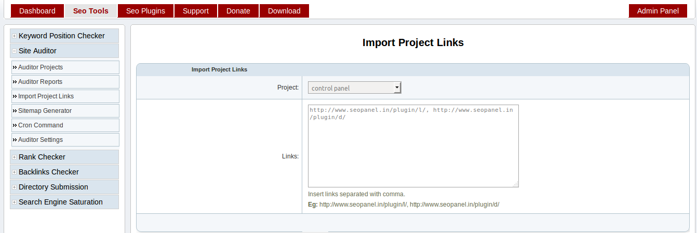
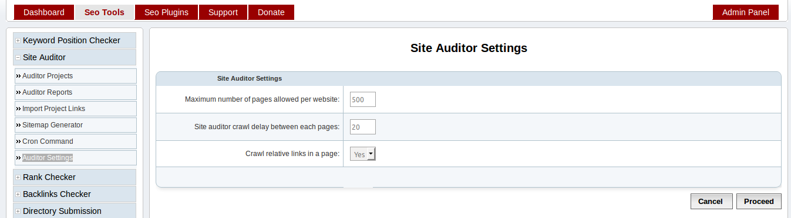

Site Auditor¶
Create Project¶
This section will help you to audit your website to know the stats related to SEO
Go to Seo Tools => Site Auditor => Auditor Projects
Click on ‘New Project’ button
Enter details as following screen shot

- Website - Select a website needs to be audited
- Maximum number of pages to be checked - Maximum number of pages needs to be audited(default value is 500, it can be changed from Auditor Settings)
- Exclude links - Insert links separated with comma needs to be excluded to prevent infinite links in reports. Eg: /plugin/l/, &lang_code=
- Check pagerank of pages - Check pagerank of pages(Note: it will increase the execution time of a project)
- Check backlinks of pages - Check backlinks of pages(Note: it will increase the execution time of a project)
- Check pages indexed or not - Check index status of pages(Note: it will increase the execution time of a project)
- Store all links found in a page - Store links found in pages for more detailed reports
- Check broken links in a page - Check brocken links in pages(Note: it will increase the execution time of a project)
- Execute with cron - Execute report generation with cron job. We recommened to select ‘Yes’ for better report generation.
You can also edit, activate, deactivate and delete projects using options available in the Auditor Projects page.
Generate Reports¶
This section help you to generate reports of site auditor projects.
We have 2 methods to generate reports, we recommend to use cron job method for report generation.
- Cron Job
Go to Seo Tools => Site Auditor => Cron Command
Add following command to your cron tab
*/15 * * * * php /opt/lampp/htdocs/seopanel/siteauditorcron.php
- Manual Report Generation
Go to Seo Tools => Site Auditor => Auditor Projects
Select ‘Run Project’ from Action select box of corresponding project and proceed.
You will get a window like following screen shot with stats.

Auditor Reports¶
This section will help you to understand different types of site auditor reports
Go to Seo Tools => Site Auditor => Auditor Reports
Reports
We will get different types of reports from this section
Filters
Project - Select required project to filter the reports
Page Link - Enter page link to filter the reports
Crawled - Select Yes to get pages with complete results generated. No to get all pages with partial results generated.
MOZ Rank - Select MOZ rank to filter the reports
Report Type - You can select different reports types
- Link Reports - Show reports based on links. Please check below screen shot
Click on the page link, you will get more detailed report like below screen shot

- Report Summary - Show complete report summary of a project. Please check below screen shot

- Duplicate Title - Show reports based on duplicate page titles found in the project pages.
- Duplicate Description - Show reports based on duplicate meta description found in the project pages.
- Duplicate Keywords - Show reports based on duplicate meta keywords found in the project pages.
Please check below screen shots for more details

You can also choose following to download and print reports in different formats
- PDF - Click on PDF icon to download reports in PDF format
- Export - Click on Export Icon to download reports in .csv format
- Print - Click on Print Icon to print te reports
Import Project Links¶
You can also import group of links to site auditor project, if program failed to find any required links from your website.
Go to Seo Tools => Site Auditor => Import Project Links
Enter details as following screen shot
- Project - Select project to which links have to be imported
- Links - Add project links to be imported separated with comma
Eg: https://www.seopanel.org/plugin/l/, https://www.seopanel.org/plugin/d/
Proceed with the values in the form, you will be redirected to projects page with the stats of import.
Sitemap Generator¶
You can also generate sitemap for your website using this feature.
Go to Seo Tools => Site Auditor => Sitemap Generator
Enter details as following screen shot

Project - Select a project to generate sitemap
Sitemap Type - Select type of sitemap according to your requirement
- XML - Can be used to submit in google web master tools
- Text - Can be used to submit in google web master tools
- HTML - Can be used to publish in your website
Change frequency - Select frequency of search engine crawl
Priority - Select priority of search engine crawl
Exclude Url - Enter links separated with comma needs to be excluded from sitemap Eg: Eg: https://www.seopanel.org/plugin/l/, https://www.seopanel.org/plugin/d/
Proceed with the values in the form, you will get download link for generated sitemap as above screenshot.
Click on sitemap link to download the sitemap.
Auditor Settings¶
In this section you can configure site auditor general settings.
Go to Seo Tools => Site Auditor => Auditor Settings
Enter details as following screen shot
- Maximum number of pages allowed per website - The maximum number of pages can be crawled in a project(Default value is 500)
- Site auditor crawl delay between each pages - Delay between each page reports generation(Default value is 20). We recommend not decrease this value for betetr report generation.
- Crawl relative links in a page - Allow project to crawl the relative links in each page